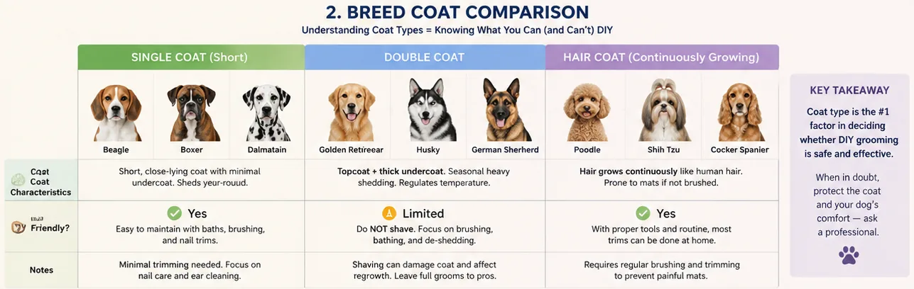
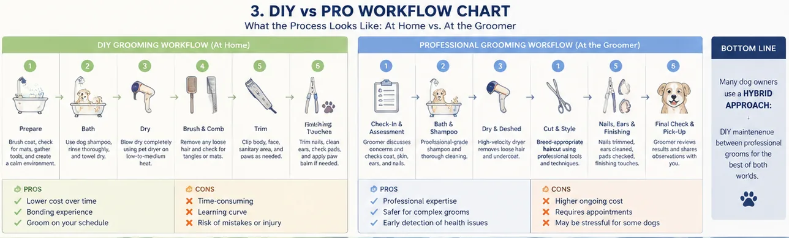
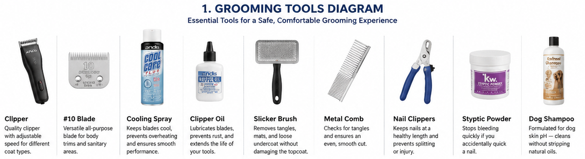

Cost, risks, and a breed-by-breed breakdown of when to pick up the clippers and when to pick up the phone. | 2026-07-05 MeltPet 7 min read
📌 Quick Answer: Is DIY Dog Grooming Worth It?
For Doodle, Poodle, and Shih Tzu owners: yes. You'll save $390 in year one and $590/year after equipment costs. For short-haired breed owners (Beagles, Boxers, Pit Bulls): probably not. The savings are marginal —you're mostly paying for convenience, not haircuts. For double-coated breed owners (Huskies, Goldens, German Shepherds): DIY the brushing and bathing, but never the clipper work. Shaving a double coat can cause permanent damage. The sweet spot for most owners is a hybrid approach: professional grooms every 8 weeks ($400–500/year) plus at-home maintenance between appointments. Full breakdown below.
📋 In This Guide
How much DIY dog grooming actually costs —equipment, consumables, and the hidden "mess-up" tax
Which breeds you should never groom at home (and why it's about biology, not skill)
The real DIY vs professional cost comparison, year by year
What professional groomers catch that you won't —lumps, infections, cracked teeth
The hybrid grooming routine that saves $400+/year without risking your dog
Safety gear you can't skip (clipper burn is real and your dog won't yelp)
Last updated: 2026-07-05
I Gave My Friend's Doodle a "Summer Cut." She Didn't Speak to Me for a Week.
I worked in the pet industry for five years. I'd watched groomers work hundreds of times. I'd held dogs while their faces were scissored, their paw pads shaved, their sanitary areas trimmed. I thought: how hard could it be? The answer: hard enough that my friend's Goldendoodle, Murphy, looked like he'd lost a fight with a lawnmower. Uneven legs. One ear slightly shorter than the other. A patch on his back where I'd pressed too hard with the clipper and taken the coat down to the skin. Murphy didn't care. My friend cared. She cared enough that she paid an emergency groomer $95 to fix my work, and I paid for her dinner for the next month.
That was 2018. I've gotten better. But the experience taught me something most "groom your dog at home!" blog posts conveniently skip: there's a learning curve, and the cost of that curve can exceed the cost of a year of professional grooming if you mess up badly enough. This is your complete dog grooming at home guide —not the Pinterest version where everything works on the first try, but the one where you learn what actually happens when an amateur picks up clippers. The goal isn't to tell you to always pay a pro or to always DIY. It's to give you the math, breed by breed, so you can answer the question "is DIY dog grooming worth it?" for your dog, your budget, and your tolerance for Sunday afternoon wrestling matches with a wet animal.
Let's Talk Actual Numbers, Not "You Could Save Hundreds!"
Every DIY grooming article opens with the same line: "You could save hundreds of dollars a year!" Technically true, the same way "you could save hundreds on restaurants by cooking at home" is technically true. The question is whether you'll actually do it consistently, and whether the result will be good enough that you don't end up paying someone to fix it.
Here's the real math for a Doodle owner in a mid-sized American city —this is the breed where grooming Doodle at home has the fastest financial payoff:
A professional groom for a 50 lb Doodle runs $80–120, every 6–8 weeks. Call it $95 per groom, 7 times a year. That's $665 in dog grooming cost per year. If you DIY, the startup equipment is roughly: a Wahl or Andis clipper ($55), a #10 blade ($20), a set of curved shears ($35), a slicker brush ($15), a metal comb ($12), nail clippers ($10), styptic powder ($6), and dog shampoo ($12). That's $165 to get started —call it $200 with tax and an extra blade because you'll dull your first one learning. Year one consumables: shampoo refills ($24), blade sharpening or replacement ($30), maybe a second clipper blade for body work ($20). Round it to $75/year after startup. So year one: $275 DIY vs. $665 pro. You save roughly $390.
Year two: $75 DIY vs. $665 pro. You save $590. The math works. But only if: (a) you actually do it every 6–8 weeks, not once and then "I'll get to it next weekend" for three months while your dog turns into a walking felt project, (b) you don't have to pay a groomer $95 to fix a DIY job you botched, and (c) your dog cooperates.
That third one is the one nobody mentions. A dog that stands perfectly still for a professional groomer on a grooming table with a noose and an experienced handler is not the same dog you'll get on your bathroom floor with a towel down and a pocket full of peanut butter. Some dogs are angels at the groomer and demons at home. Some are the reverse. You won't know which yours is until you try.
Budget-focused Doodle/Poodle owners; short-haired breed baths & nails
Double-coated breeds; complex cuts; dogs with behavioral issues; health monitoring
All costs based on mid-sized U.S. city pricing, 2026. Your local prices may vary 20%.
The Breed Breakdown: Who You Can DIY, Who You Can't, and Who's Borderline
This isn't about difficulty. It's about risk. Mess up a Poodle's topknot and he looks ridiculous for six weeks. Mess up a Husky's undercoat and you've damaged a thermoregulatory system that took 10,000 years of evolution to build. The stakes are not the same. The American Kennel Club categorizes breeds into distinct coat types —and those categories determine everything about your grooming approach.

Four coat types, four completely different grooming protocols. Image: MeltPet.
Short-haired, low-maintenance breeds (Beagles, Boxers, Dobermans, Pit Bulls, Weimaraners, Greyhounds). You should already be doing these yourself. They need baths, nail trims, and occasional brushing. That's it. Paying a groomer $55 to wash a Beagle is like paying someone to wash your Toyota Corolla —the value isn't there. Buy shampoo, learn to do nails, spend the savings on something else. The only reason to involve a pro for these breeds is if your dog panics during nail trims and you need someone with a grooming table and proper restraint technique.
Single-coated dogs that need regular haircuts (Poodles, Doodles, Bichons, Maltese, Shih Tzus, Yorkies). These are the breeds where DIY makes the most financial sense —and where it's hardest to do well. Their hair grows continuously, like human hair, and they need full-body clips every 6–8 weeks. The money you save is real. The skill required is also real. If you're going to DIY a Doodle, invest in a grooming table. I'm serious. The $80 table is the difference between a decent cut and your dog looking like abstract art. It gives you both hands free, keeps the dog at working height so your back doesn't give out, and —critically —the dog learns that the table means "stand still," not "wrestle on the bathroom floor." Most bad DIY cuts aren't from bad clippers. They're from trying to groom a moving target while hunched over on tile.
Double-coated breeds (Huskies, Golden Retrievers, German Shepherds, Corgis, Australian Shepherds, Labs, Akitas). Do not shave these dogs. Not in summer. Not "to keep them cool." Not because you saw a picture of a shaved Husky on Instagram and it looked adorable. The American Kennel Club is explicit on this point: double-coated breeds should never be shaved except for medical necessity. A double coat is two layers: a dense, woolly undercoat that insulates, and a coarser outer guard coat that protects. When you shave a double-coated dog, the guard coat may not grow back normally —the undercoat grows in first and creates a thick, mat-prone layer that actually traps heat worse than the intact coat. Veterinary dermatology research has documented post-clipping alopecia, where patches of coat simply never regrow. For these breeds, DIY should be limited to: brushing (a lot of brushing —invest in an undercoat rake and a high-velocity dryer for blowing out loose undercoat seasonally), bathing, nail trims, and paw pad trimming. Leave the full groom —especially any clipper work —to a professional who does double-coat preservation, not a big-box store groomer who'll shave whatever walks in. According to the National Dog Groomers Association of America, improper coat handling is one of the top three causes of grooming-related complaints from veterinarians.
The in-between breeds (Cocker Spaniels, Springer Spaniels, Cavaliers, Schnauzers, Westies, Scotties). These have coats that fall somewhere between "needs clipping" and "should never be clipped." Many require hand-stripping (pulling dead guard hairs by hand or with a stripping knife) to maintain proper coat texture —clipping softens the coat over time. If you want to DIY a Schnauzer or a wire-coated terrier, learn to hand-strip. It's not faster than clipping. It's not easier. But it's what preserves the coat the breed was meant to have. YouTube has excellent tutorials from certified groomers. Budget an hour for a small terrier, longer for a Cocker. Or pay a groomer who hand-strips —the AKC breed standard for most terriers specifies hand-stripping, not clipping, for show-quality coats. Your call.
What a Groomer Sees That You Won't
I've watched groomers catch things owners missed for months. A groomer once found a pea-sized lump on a Golden Retriever's inner thigh that turned out to be a mast cell tumor —caught early enough that surgery was curative. Another spotted an ear infection so deep in a Cocker Spaniel's canal that the owner had no idea, because the dog hadn't been shaking its head yet. Another noticed a cracked premolar while lifting the lip to check for facial mats. None of these were part of the groom. All of them were part of what a professional sees when they spend 90 minutes with their hands on your dog.
This isn't an argument to never DIY. It's an argument for having eyes on your dog that aren't yours. Even if you do 90% of grooming at home, a professional groom every 3–4 months is a health screen disguised as a haircut. The American Veterinary Medical Association recommends regular professional grooming as part of a preventive health routine —not just for aesthetics, but because groomers are often the first line of detection for conditions owners miss. Ask your groomer to check ears, teeth, anal glands, skin, and paws —they're already looking, but telling them explicitly means they'll tell you what they find instead of just noting it and moving on. A good groomer will flag: ear infections before the dog shows symptoms, skin hot spots before they become open wounds, matting you missed in places you don't check (armpits, behind ears, between back legs), overgrown nails that are altering the dog's gait, anal gland impaction, and lumps and bumps that weren't there three months ago. That last one alone justifies the cost of a quarterly groom for any dog over six years old.

Decision flowchart: should you DIY or call the groomer? Image: MeltPet.
🛒 Transparency note: Some links below are affiliate links. If you buy through them, MeltPet earns a small commission at no extra cost to you. I only recommend products I've used personally or that carry the VOHC (Veterinary Oral Health Council) or equivalent professional endorsement. As an Amazon Associate, MeltPet earns from qualifying purchases.
🛠️ Build Your Grooming Kit: Three Tiers, Zero Fluff

Your dog grooming tools at a glance. Image: MeltPet.
Beginner Kit —$45–65
For: Short-haired breeds, bath-only dogs, nail maintenance
Blade sharpening kit or service subscription ($20–40)
🎯 Recommendation: Start with the Beginner or Intermediate tier based on your breed. The Prosumer upgrades —especially the table and dryer —are what separate "this is fine" from "this actually looks professional." The grooming table alone improves cut quality more than a $200 clipper upgrade. If you buy one thing beyond the basics, buy the table.
The Hybrid Approach Most Experienced Owners Land On
After about two years of experimenting —and one unfortunate incident with a mat behind my own dog's ear that I didn't find until it was the size of a walnut —I stopped trying to do everything. I also stopped paying for everything. Here's where I landed:
Professional groom every 8 weeks. Full bath, haircut if needed, nail grind (not clip —grinding is smoother and less likely to quick), ear cleaning, anal gland check. This is the "health screen" appointment as much as the grooming appointment.
Maintenance at home between appointments. Brushing 2–3 times a week with a slicker brush followed by a metal comb (the comb is the lie detector —the brush can glide over mats that the comb will catch). Paw pad trimming every 2–3 weeks —long paw fur collects ice balls in winter, burrs in summer, and reduces traction on hardwood floors year-round. Sanitary trim as needed. Ear checks weekly, especially after swimming. Nail checks every other week —if you can hear the nails clicking on the floor, they're too long, regardless of when the next groom is scheduled.
Bath at home between grooms if the dog gets into something. A skunked dog at 11 p.m. is getting a bath in your tub whether you have a grooming appointment tomorrow or not. Own shampoo and know how to use it. (Hydrogen peroxide, baking soda, and dish soap —one quart 3% peroxide, ¼ cup baking soda, one teaspoon dish soap. Mix, apply to dry coat, let sit 5 minutes, rinse thoroughly. Do not store the mixture —it releases oxygen and can explode in a closed container. This is the only formula that actually works on skunk. Tomato juice is a myth that makes your dog smell like tomato juice and skunk.)
This hybrid routine costs about $400–500/year in professional grooming (5–6 visits) plus maybe $50 in supplies. That's $275–350 more than pure DIY, and $165–265 less than pure professional. For that difference, I get: a dog who looks good, a set of professional eyes on my dog every two months, and zero Sunday afternoons spent wrestling a wet dog in my bathroom while my family pretends they can't hear me yelling. That's worth the premium to me. Whether it is to you depends on your budget, your dog, your skill level, and how much you value those Sunday afternoons.
The One Thing Every DIY Owner Should Know Before Picking Up Clippers
Clipper blades get hot. Fast. In under two minutes of continuous use, a #10 blade can reach 140F —hot enough to burn a dog's skin. The dog won't necessarily yelp. They'll just flinch, or tense up, or start fighting you for "no reason," and you'll get frustrated and push through, and then find a red burn line on the belly later. Check blade temperature on your inner wrist every 60 seconds. If it's uncomfortable on your skin, it's uncomfortable on theirs. Keep a spare blade and swap it out when one heats up. Spray coolant on the hot one and let it rest while you use the other. This is not optional equipment for any dog getting a full-body clip. One blade = one burned dog eventually.
Also: never clip a dirty dog. Dirt and oil in the coat act like sandpaper on clipper blades —they dull the blade, the cut is uneven, and the clipper pulls hair instead of cutting it. Bath first. Dry completely. Brush out all tangles. Then clip. Groomers bathe after clipping sometimes —they know what they're doing and they have industrial dryers. You're not a groomer. Bath first, clip second, and your blades will last twice as long.
📚 Sources & References
American Kennel Club (AKC).Dog Grooming Guide by Breed Type. akc.org —Breed-specific coat care recommendations and double-coat preservation guidelines. The AKC explicitly advises against shaving double-coated breeds.
American Veterinary Medical Association (AVMA).Preventive Pet Healthcare Guidelines. avma.org —Recommends regular professional grooming as a component of preventive veterinary care, particularly for early detection of skin conditions and masses.
Verstraete, F.J.M. (2012).Self-Assessment Color Review of Veterinary Dentistry. Manson Publishing. —Notes that dental pathology is often first identified by groomers during routine oral handling.
National Dog Groomers Association of America (NDGAA).Professional Grooming Safety Standards. —Industry standards for clipper safety, blade temperature management, and breed-specific coat handling protocols.
Grier, R.L. (2006).Canine Reproduction and Neonatology. In: Veterinary Clinics: Small Animal Practice. —Documents thermal burn risk from surgical clipper blades; the same physics applies to grooming clippers.
⚕️ Medical Disclaimer: This article is for informational purposes only and does not constitute veterinary advice. Always consult a licensed veterinarian for diagnosis and treatment of your pet's health conditions.